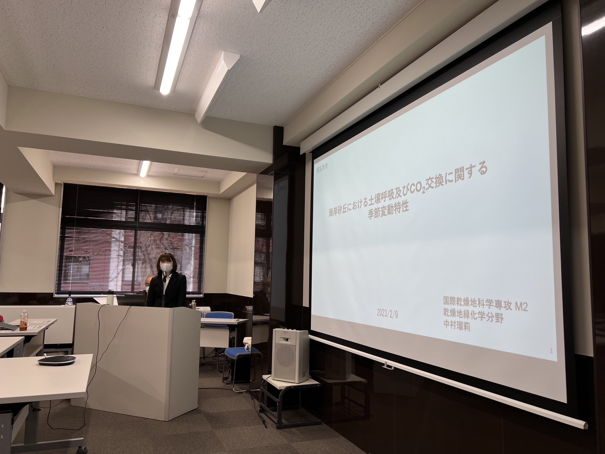

研究内容

卒論
「モンゴルにおける小麦畑と菜種畑が草地に与える影響」
日本大学地球環境・資源リモートセンシング研究室にて、卒業研究を発表2019年8月に、モンゴルにて現地調査
菜種畑・小麦畑とその隣接草地の土壌中の水分、養分を測定

聞き取り調査
モンゴルの遊牧民に人文学的調査を実施
本来の草原地帯から乾燥地に遷移する画像を数枚見せ、心境の変化を聞き取るアンケート
現地民の悲嘆や怒りをじかに聞き、自分にできることはないかと思い、乾燥地研究センターに進学を決意
本来の草原地帯から乾燥地に遷移する画像を数枚見せ、心境の変化を聞き取るアンケート
現地民の悲嘆や怒りをじかに聞き、自分にできることはないかと思い、乾燥地研究センターに進学を決意
修論
「海岸砂丘における土壌呼吸およびCO2交換に関する季節変動特性」
鳥取大学感動地研究センターにて、修論を発表2021～2023年に、敷地内の海岸砂丘にて現地調査
自生する海浜植生4種の光合成・呼吸を月2ペースで測定
また、NDVI画像解析、葉面積、バイオマスを測定
環境データとして、土壌水分、地温、光量子を測定
